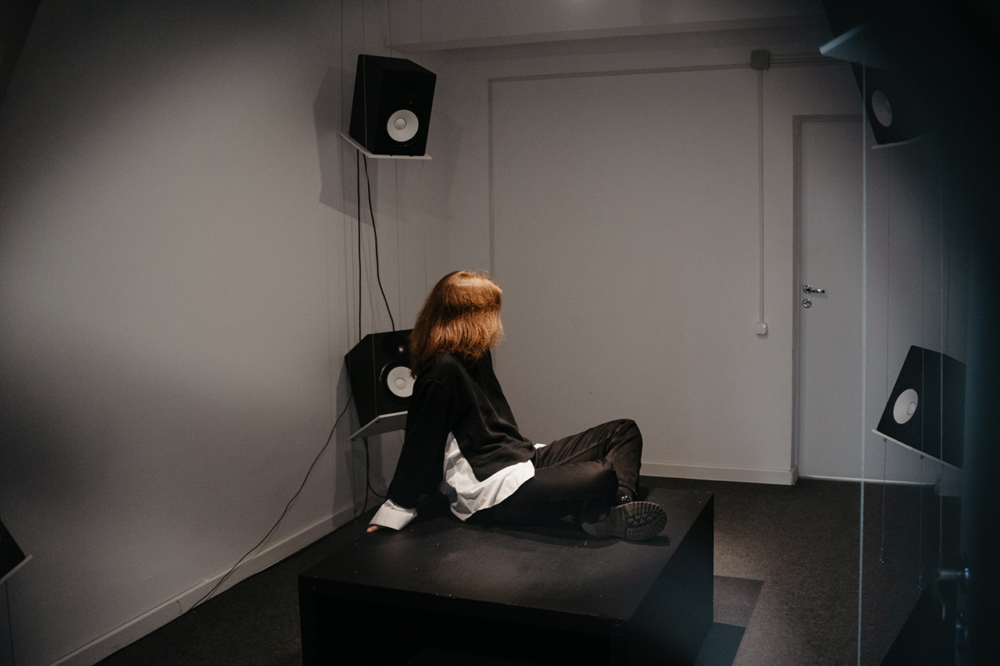
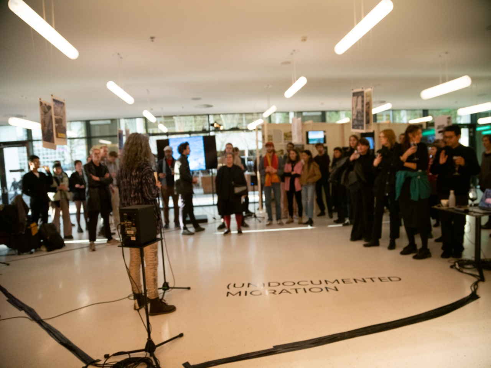

_________________________________________________________
8-channel piece 'Vacuum' was presented as a part of "Razhzhizhenniy Dom" ("Liquified house") exhibition. Multichannel audio based on Navier-Stokes algorithm as a control source and granular synthesis as an audio core. Source samples used were converted youtube POV videos of ukrainian soldiers taking place in hostilities. The piece was done remotely.
_________________________________________________________
6-channel piece was an addition for the opening of the main exposition of Jason De León project Hostile Terrain '94', that took place at Amare, The Hague. The audio based on collected foley records of the deserts from different parts of the world and creates immersive sonic landscape that generatively changes over time and dont have probability to repeat itself. The piece and audio systems setup was done remotely.